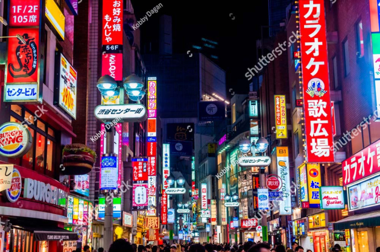

Про місто

Токіо — це ультрасучасне мегаполіс, де технології майбутнього співіснують із багатовіковими традиціями.
Чому я обрала це місто?
Мене захоплює японська культура, чисті вулиці, безпека та неймовірна динаміка цього міста.
Визначні місця та цікаві факти
- Перехрестя Сібуя — найінтенсивніше перехрестя у світі.
- Храм Сенсо-дзі — найстаріший буддійський храм Токіо.
- У Токіо знаходиться найбільша кількість ресторанів з зірками Мішлен.
Особиста оцінка
Оцінка: 10/10
Дізнатися більше: Токіо у Вікіпедії